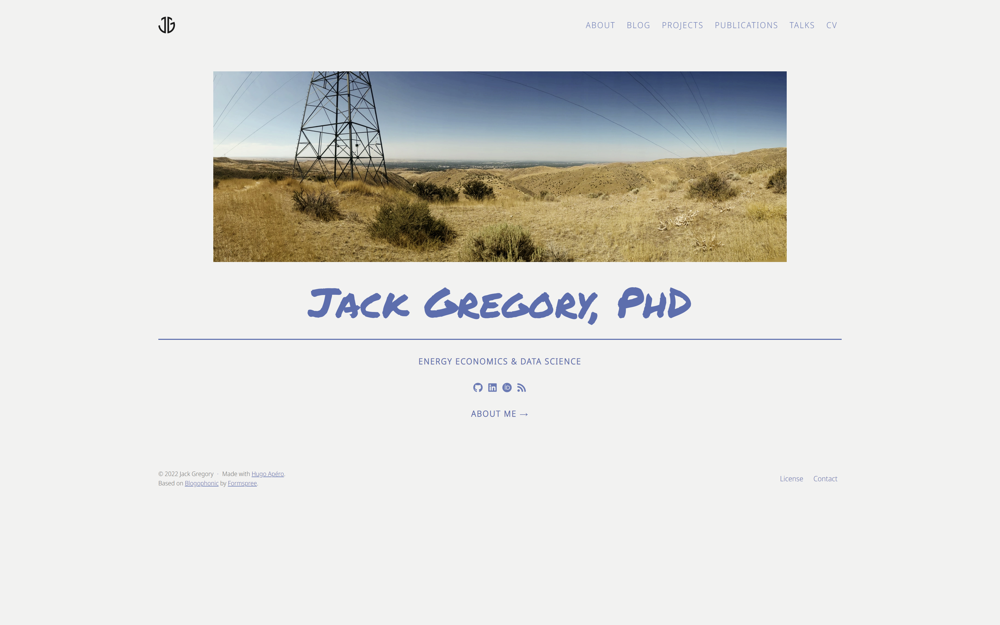

Stacking the hugo-apéro homepage
By Jack Gregory in Web Development
October 20, 2022

TL;DR
In this blog, I summarize the steps necessary to change the homepage of a Hugo-Apéro website from the theme’s default side-by-side image/text layout to a stacked layout, with a full-width image on top and centered text below.
Introduction
Hugo-Apéro’s default layouts/index.html lays the homepage out as two flexbox columns: a text column (title, subtitle, social links, description, action link) on one side, and an image column on the other, toggled left/right with the image_left front-matter param. That works well for a portrait-style profile photo, but it doesn’t suit a wide, panoramic image, which gets squeezed into half the page width.
In this blog, I’ll outline the two steps necessary to restack your own Hugo-Apéro homepage:
- Replace the side-by-side flex layout with a stacked one; and,
- Constrain the image height so it doesn’t dominate the page.
Layout Change
The stock template wraps both columns in a single flex-l items-center container, with each column sized to w-50-l (50% width on large screens) and the image right-aligned (tr) or reversed via inline flex-direction: row-reverse when image_left is set:
<div class="flex-l items-center" style="{{ if .Params.image_left }}flex-direction: row-reverse;{{ end }}">
<div class="mh4 w-50-l {{ if not .Params.text_align_left }}tr{{ end }}">
...
</div>
<div class="tr w-50-l {{ if .Params.image_left }}ml4{{ else }}mr4{{ end }}">
...
</div>
</div>
To stack the image above the text instead, that flex wrapper and both columns’ 50%-width classes need to go. Here are the changes and the full replacement layouts/index.html:
- Outer wrapper:
flex-l items-center(with itsimage_left-drivenrow-reversetoggle) becomes a plainw-100block. There’s no longer a second column to reverse against, so the toggle is dropped entirely. - Image column:
tr w-50-l, plus theimage_left-drivenml4/mr4margin toggle, becomesw-100, so the image div fills the container’s full width rather than half of it. - Image element:
mv0 w-70-mbecomesmv0 w-100, so the<img>itself stretches to match its now full-width parent instead of shrinking to 70%. - Text column:
mh4 w-50-l, plus thetext_align_left-driventrtoggle, becomesmh4 mt4 tc. The 50%-width class is dropped since the column is no longer sharing horizontal space with the image;tr(right-align) is replaced withtc(center-align) to match a centered stacked layout; andmt4adds spacing between the image above and the text below. - Column order: the image div now comes first in the markup, followed by the text div, so the image renders on top and the text underneath.
{{ define "main" }}
{{ $page := . }}
<main class="page-main pa4" role="main">
<section class="page-content mw9 center">
<div class="w-100">
<div class="w-100">
{{ with .Params.images }}
{{ range first 1 . }}<img class="mv0 w-100" style="max-height: 300px; object-fit: cover;" src="{{ . }}"/>{{ end }}
{{ end }}
</div>
<div class="mh4 mt4 tc">
{{ with .Params.title }}<h1 class="f2 f1-m f-subheadline-l fw5-ns mv4 lh-solid">{{ . }}</h1>{{ end }}
{{ with .Params.subtitle }}<h2 class="f5 fw7 mt0 mb4 ttu tracked">{{ . }}</h2>{{ end }}
{{ if .Params.show_social_links }}{{ partial "shared/social-links.html" . }}{{ end }}
{{ with .Params.description }}<p class="f4 mt4 lh-copy">{{ . | markdownify }}</p>{{ end }}
{{ if .Params.show_action_link }}<a class="mt4 action {{ .Params.action_type }}" href="{{ .Params.action_link | relURL }}">{{ .Params.action_label | safeHTML }}</a>{{ end }}
</div>
</div>
</section>
</main>
{{ end }}
Image Height
A full-width <img> on a wide screen can end up taller than intended, especially for a panoramic source photo. Adding an inline style to the <img> tag keeps it in check:
- Set maximum height:
max-height: 300pxcaps how tall the image can grow, regardless of screen width. - Fill width:
object-fit: coverfills that width × max-height box proportionally, cropping any overflow rather than squashing the image out of its original aspect ratio. This only works correctly because the image already has a defined width fromw-100.
<img class="mv0 w-100" style="max-height: 500px; object-fit: cover;" src="{{ . }}"/>
Our 300px is a reasonable starting point, but it’s worth adjusting up or down depending on your image’s aspect ratio and how prominent you want it to be on the page.
Usage
With the layout replaced, no new front-matter fields are required. The existing images, title, subtitle, show_social_links, description, and show_action_link params on your homepage’s _index.md continue to work exactly as before — only their on-page arrangement has changed, from side-by-side to stacked.
Note that the image_left and text_align_left params are no longer read by this version of the template. If you’d like to keep using them — for example, toggling the text between centered and left-aligned per site — they can be reintroduced by swapping the hardcoded tc class for a conditional based on .Params.text_align_left.